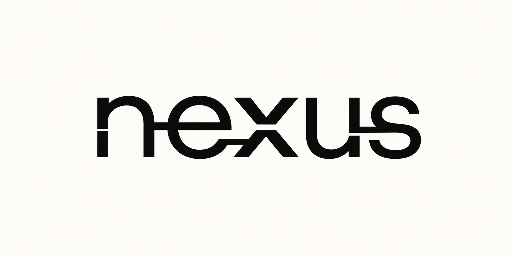

Remember the work
Search session history, extract reusable skills, and carry useful context forward with local semantic memory trained on your own corpus.

Nexus is the local continuity and trust layer between your AI agents, your knowledge, and your machine. Carry memory across sessions. Inspect what agents read. Guard what they run.
# install once, then connect any MCP client npm install -g @hawon/nexus nexus guard demo nexus guard install
One local layer
Nexus does not ask you to replace the tools you already use. It gives them durable context and a shared safety boundary.
Search session history, extract reusable skills, and carry useful context forward with local semantic memory trained on your own corpus.
Frame untrusted content, quarantine clear prompt injection, redact secrets, and stop dangerous commands before execution.
Map architecture, review code, scan repository history, and give a new agent the context it needs without another hosted model.
Not another coding agent. The layer that makes your agents compound.
Nexus is infrastructure for the multi-agent world: persistent local context on one side, an inspectable execution boundary on the other.
The MCP server exposes memory, guard, review, secrets, codebase, configuration, and collection tools through one local interface.
Trust architecture
Nexus is a tripwire and structural backstop, not a sandbox. Its core design keeps trust decisions visible and local.
Normalize obfuscation, scan for injection, redact secrets, and always frame fetched content as data.
The agent keeps working with the tools and model you chose. Nexus does not proxy model calls.
Resolve obfuscation and judge capabilities such as fetch-and-execute, exfiltration, and destruction.
Evidence over theatre
Every published claim maps to a reproducible command. Regression sets are labelled as regression sets, not passed off as independent evaluation.
Reproduce locally with npm run benchmark:redteam and npm run benchmark:logic. See the repository for third-party benchmark methodology and pinned upstream revisions.
Built for the multi-agent era
Open source, local-first, and useful without a model API key.